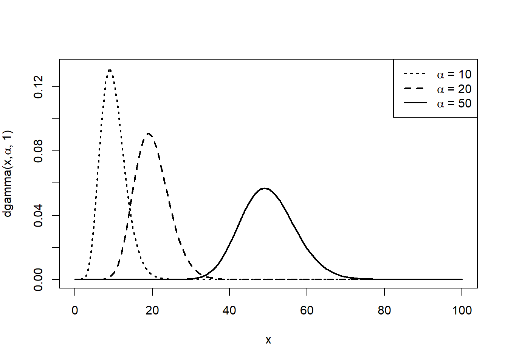

Code
qf(c(0.05, 0.95), 5, 10)[1] 0.2111904 3.3258345Soit \(\bar{X}_{5}\) la moyenne d’un échantillon de taille \(5\) tiré d’une distribution normale avec moyenne \(10\) et variance \(125\). Trouver la constante \(c\) telle que \(\prob{\bar{X}_{5} < c} = 0,90\).
\(16,41\)
On sait que \(\bar{X}_{5} \sim \mathcal{N}(\esp{\bar{X}_{5}}, \var{\bar{X}_{5}})\) avec \(\esp{\bar{X}_{5}} = \esp{X} = 10\) et \(\var{\bar{X}_{5}} = \var{X}/n = 125/5 = 5\). Par conséquent, \[ \begin{aligned} \prob{\bar{X}_{5} < c} &= \Prob{\frac{\bar{X}_{5} - 10}{\sqrt{25}} < \frac{c - 10}{\sqrt{25}}} \\ &= \prob{Z < z_\alpha} \\ &= 1 - \alpha \end{aligned} \] avec \(Z \sim \mathcal{N}(0, 1)\) et \(z_\alpha = (c - 10)/5\). Ici, on a \(1 - \alpha = 0,90\). On trouve dans une table de quantiles de la loi normale que \(z_{0,10} = 1,282\), d’où \(c = 16,41\).
Si \(\bar{X}_n\) est la moyenne d’un échantillon de taille \(n\) tiré d’une distribution normale de moyenne \(\mu\) et de variance \(100\), trouver la valeur de \(n\) telle que \(\Prob{\mu - 5 < \bar{X}_n < \mu + 5} = 0,954\).
\(16\)
On a \(\esp{\bar{X}_n} = \esp{X} = \mu\), \(\var{\bar{X}_n} = \var{X}/n = 100/n\) et \(\bar{X}_n\sim \mathcal{N}(\mu, 100/n)\). Ainsi, on cherche \(n\) tel que \[ \begin{aligned} \prob{\mu - 5 < \bar{X}_n< \mu + 5} &= \Prob{-\frac{5}{10/\sqrt{n}} < \frac{\bar{X}_n- \mu}{10/\sqrt{n}} < \frac{5}{10/\sqrt{n}}} \\ &= \Phi\left( \frac{5 \sqrt{n}}{10} \right) - \Phi\left( -\frac{5 \sqrt{n}}{10} \right) \\ &= 2 \Phi\left( \frac{5\sqrt{n}}{10} \right) - 1 \\ &= 0,954, \end{aligned} \] soit \[ \Phi \left( \frac{5\sqrt{n}}{10} \right) = 0,977. \] On trouve dans une table de loi normale que \(5 \sqrt{n}/10 = 2\), d’où \(n = 16\).
Soit \(X_1, \dots, X_{25}\) un échantillon aléatoire issu d’une distribution \(\mathcal{N}(0, 16)\) et \(Y_1, \dots, Y_{25}\) un échantillon aléatoire issu d’une distribution \(\mathcal{N}(1, 9)\). Les deux échantillons sont indépendants. Soient \(\bar{X}_{25}\) et \(\bar{Y}_{25}\) les moyennes des deux échantillons. Calculer la probabilité \(\prob{\bar{X}_{25} > \bar{Y}_{25}}\).
\(0,159\)
On a \(\bar{X}_{25} \sim \mathcal{N}(0, 16/25)\), \(\bar{Y}_{25} \sim \mathcal{N}(1, 9/25)\) et, par conséquent, \(\bar{X}_{25} - \bar{Y}_{25} \sim \mathcal{N}(-1, 1)\). On a donc \[ \begin{aligned} \prob{\bar{X}_{25} > \bar{Y}_{25}} &= \prob{\bar{X}_{25} - \bar{Y}_{25} > 0} \\ &= \Prob{\frac{\bar{X}_{25}-\bar{Y}_{25} - (-1)}{\sqrt{1}} > \frac{0 - (-1)}{\sqrt{1}}} \\ &= 1 - \Phi(1)\\ &= 0,159. \end{aligned} \]
Soit \(Y_1,\ldots,Y_8\) un échantillon aléatoire issu d’une distribution \(\mathcal{N}(0,1)\) et \[ \bar Y= (Y_1+\cdots+Y_7)/7. \] Quelle est la distribution des statistiques suivantes? Justifiez vos réponses.
a) \(W = \sum_{i=1}^7 Y_i^2\)
b) \(U = \sum_{i=1}^7 (Y_i-\bar Y)^2\)
c) \(Y_8^2+U\)
d) \(\sqrt{7} Y_8/\sqrt{W}\)
e) \(\sqrt{6}Y_8/\sqrt{U}\)
f) \(3(7\bar Y^2+Y_8^2)/U\)
a) \(\chi^2(7)\)
b) \(\chi^2(6)\)
c) \(\chi^2(7)\)
d) \(t(7)\)
e) \(t(6)\)
f) \(F(2, 6)\)
a) La statistique \(W = Y_1^2 + \cdots + Y^2_7\) suit une loi khi carré avec \(7\) degrés de liberté, \(\chi^2_{(7)}\), puisque \(W\) est une somme de sept variables indépendantes, chacune d’entre elle étant le carré d’une variable aléatoire normale centrée réduite.
b) Si \(Y_1, \ldots , Y_n\) forme un échantillon aléatoire tiré d’une \(\mathcal{N}(\mu, \sigma^2)\), alors \[ \frac{(n-1)S^2_n}{\sigma^2} = \frac{1}{\sigma^2} \sum_{i=1}^n (Y_i - {\bar Y}_n)^2 \] a une distribution khi carré avec \(n-1\) degrés de liberté, \(\chi^2_{(n-1)}\). Si on pose \(n=7\) et \(\sigma^2 =1\), on trouve que \[ U = \sum_{i=1}^7 (Y_i - {\bar Y})^2 \sim \chi^2_{(6)}. \]
c) Selon (b), \(U\) a une distribution \(\chi^2_{(6)}\). Cela signifie que la somme a la même distribution que \(Z_1^2 + \cdots + Z_6^2\), où \(Z_1, \ldots , Z_6\) sont iid \(\mathcal{N}(0,1)\) et indépendantes de \(Y_8\), qui suit aussi une \(\mathcal{N}(0,1)\). Ainsi, \[ Y_8^2 +U \sim \chi^2_{(7)}. \]
d) D’abord, on observe que \(\sqrt{7} Y_8 /\sqrt{W} = Y_8/\sqrt{W/7}\), où \(Y_8 \sim \mathcal{N}(0,1)\) et \(W \sim \chi^2_{(7)}\) selon a). De plus, \(W\) et \(Y_8\) sont des variables aléatoires indépendantes. Ainsi, \(Y_8/\sqrt{W/7}\) suit une loi Student \(t_{(7)}\).
e) On note que \(U \sim \chi^2_{(6)}\) selon b). Ensuite, \(U\) est indépendant de \(Y_8 \sim \mathcal{N}(0,1)\). Ainsi, \[ \frac{\sqrt{6}Y_8}{\sqrt{U}} = \frac{Y_8}{\sqrt{U/6}} \sim t_{(6)}. \]
f) On sait que la moyenne échantillonnale \({\bar Y}\) est indépendante de la variance échantillonnale \(U/6\). Donc, \({\bar Y}\) et \(Y_8\) sont toutes deux indépendantes de \(U\). Puisque \({\bar Y} \sim \mathcal{N}(0,1/7)\), on a \(\sqrt{7} {\bar Y} \sim \mathcal{N}(0,1)\) et ainsi \[ 7{\bar Y}^2 + Y^2_8 = (\sqrt{7} {\bar Y})^2 + Y^2_8 \sim \chi^2_{(2)}. \] De plus, \(U \sim \chi^2_{(6)}\) avec (b). Il en découle que \[ \frac{3(7{\bar Y}^2 + Y^2_8)}{U} = \frac{\displaystyle \frac{(\sqrt{7} {\bar Y})^2+Y^2_8}{2}}{U/6} \sim \mathcal{F}_{(2,6)}. \]
Soit \(X_1, \dots, X_n\) un échantillon aléatoire d’une loi normale de moyenne \(\mu\) et variance \(\sigma^2\). Trouver la moyenne et la variance de la statistique \[ S^2_n = \frac{1}{(n-1)}\sum_{i=1}^n (X_i - \bar{X})^2. \]
\(\esp{S^2_n} = \sigma^2\), \(\var{S^2_n} = 2 \sigma^4/(n-1)\)
On sait que \((n-1)S^2_n/\sigma^2 \sim \chi^2(n - 1)\), que l’espérance d’une loi \(\chi^2\) est égale à son nombre de degrés de liberté et que sa variance est égale à deux fois son nombre de degrés de liberté. On a donc \[ \begin{aligned} \esp{S^2_n} &= \frac{\sigma^2}{(n-1)} \Esp{\frac{(n-1)S^2_n}{\sigma^2}}\\\ &= \frac{(n - 1) \sigma^2}{(n-1)}=\sigma^2 \\ \end{aligned} \]
et
\[ \begin{aligned} \var{S^2_n} &= \frac{\sigma^4}{(n-1)^2} \Var{\frac{(n-1)S^2_n}{\sigma^2}}\\ &= \frac{2 (n - 1) \sigma^4}{(n-1)^2}= \frac{2 \sigma^4}{(n-1)} \end{aligned} \]
Soit \(S^2_6\) la variance d’un échantillon de taille \(6\) d’une distribution normale de moyenne \(\mu\) et de variance \(10\). Calculer \(\prob{2,30 < S^2_6 < 22,2}\).
\(0,90\)
On sait que \(5S^2_6/\sigma^2 \sim \chi^2(5)\). Soit \(Y \sim
\chi^2(5)\). On a donc, \[
\begin{aligned}
\prob{2,30 < S^2_6 < 22,2}
&= \Prob{\frac{5 (2,30)}{10} <
\frac{5 S^2_6}{10} <
\frac{5 (22,2)}{10}} \\
&= \prob{1,15 < Y < 11,1}\\
&= \prob{Y < 11,1} - \prob{Y < 1,15}.
\end{aligned}
\] On trouve dans une table de quantiles de la loi khi carré (ou avec la fonction qchisq dans R, par exemple) que \(\prob{Y < 11,1} = 0,95\) et \(\prob{Y < 1,15} = 0,05\). Par conséquent, \(\prob{2,30 < S^2_6 < 22,2} = 0,90\).
Trouvez la fonction de densité de \(S_n^2\), la variance échantillonale d’un échantillon de taille \(n\) d’une distribution \(\mathcal{N}(0,\sigma^2)\). Est-ce que la distribution échantillonale de \(S_n^2\) fait partie d’une famille de distributions connues? Utilisez ce résultat pour trouver la moyenne et la variance de \(S_n^2\).
Truc: Considérez \((n-1)S_n^2/\sigma^2\sim \chi^2_{(n-1)}\) et utilisez la méthode de la fonction de répartition pour obtenir la densité de la variable aléatoire transformée.
Oui. \(S^2_n \sim Ga(n-1/2, 2\sigma^2 / (n-1))\) donc \(\esp{S^2_n} = \sigma^2\) et \(\var{S^2_n} = \frac{2\sigma^4}{n-1}\).
On sait que \(W=(n-1)S_n^2/\sigma^2\sim \chi^2_{(n-1)}\), et on cherche à trouver la fonction de densité de \(S_n^2=\sigma^2 W /(n-1)\). Puisque c’est une transformation d’échelle, on peut utiliser la méthode de la fonction de répartition. D’abord, on exprime la fonction de répartition de \(S_n^2\) en termes de la fonction de répartition de \(W\): \[ \begin{aligned} F_{S_n^2}(s)&=\Pr[S_n^2\leq s]=\Pr\left[\frac{\sigma^2 W}{n-1}\leq s\right]=\Pr[W\leq s(n-1)/\sigma^2]=F_W\left(\frac{s(n-1)}{\sigma^2}\right). \end{aligned} \] Ensuite, on dérive \(F_{S_n^2}(s)\) en fonction de \(s\) pour trouver la densité: \[ \begin{aligned} f_{S_n^2}(s) &=\frac{\d}{\d s}F_W\left(\frac{s(n-1)}{\sigma^2}\right) = f_W\left(\frac{s(n-1)}{\sigma^2}\right)\frac{n-1}{\sigma^2}. \end{aligned} \] Finalement, la densité de \(W\) est la distribution d’une \(\chi^2_{n-1}\). Donc, pour \(s>0\), \[ \begin{aligned} f_{S_n^2}(s) &= \frac{n-1}{\sigma^2}\frac{1}{2^{(n-1)/2}\Gamma(\frac{n-1}{2})}\left(\frac{(n-1)s}{\sigma^2}\right)^{(n-1)/2-1}\exp\left(-\frac{(n-1)s}{2\sigma^2}\right)\\ &=\left(\frac{n-1}{2\sigma^2}\right)^{(n-1)/2}\frac{1}{\Gamma(\frac{n-1}{2})}s^{(n-1)/2-1}\exp\left(-\frac{s}{2\sigma^2/(n-1)}\right). \end{aligned} \] Par conséquent, \(S_n^2\) suit une distribution gamma avec paramètres \(\alpha=(n-1)/2\) et \(\beta=2\sigma^2/(n-1)\). La moyenne et la variance sont: \[ \begin{aligned} \ex[S_n^2]&= \alpha\beta= \frac{n-1}{2}\frac{2\sigma^2}{n-1}=\sigma^2\\ \vr(S_n^2)&=\alpha\beta^2=\frac{n-1}{2}\frac{4\sigma^4}{(n-1)^2}=\frac{2\sigma^4}{n-1}. \end{aligned} \]
Soit \(Z \sim \mathcal{N}(0, 1)\) avec fonction de densité de probabilité \[ \begin{aligned} \phi(z) &= \frac{1}{\sqrt{2 \pi}} e^{-\frac{1}{2} z^2}, \quad - \infty < z < \infty, \\ \end{aligned} \]
et fonction de répartition
\[ \begin{aligned} \Phi(z) &= \int_{-\infty}^z \phi(x) dx. \end{aligned} \] Exprimer les fonctions de densité et de répartition de \(X = \mu + \sigma Z\) en fonction de \(\phi(\cdot)\) et \(\Phi(\cdot)\).
\(f_X(x) = \sigma^{-1} \phi((x - \mu)/\sigma)\), \(F_X(x) = \Phi((x - \mu)/\sigma)\)
On a \(X = \mu + \sigma Z\). Par la technique de la fonction de répartition, on obtient: \[ \begin{aligned} F_X(x) &= \prob{X \leq x}\\ &= \prob{\mu + \sigma Z \leq x}\\ &= \Prob{Z \leq \frac{x - \mu}{\sigma}}\\ &= \Phi\left(\frac{x-\mu}{\sigma}\right). \end{aligned} \] Ainsi, la fonction de densité de probabilité de \(X\) est \[ f_X(x) = \frac{d}{dx} \Phi\left(\frac{x - \mu}{\sigma}\right) = \frac{1}{\sigma} \phi\left(\frac{x-\mu}{\sigma}\right). \]
Soit la variable aléatoire \(Z \sim \mathcal{N}(0, 1)\). Démontrer que \(Z^2 \sim \chi^2(1)\) avec la technique de la fonction génératrice des moments.
Note: il faut intégrer pour trouver la fonction génératrice des moments de \(Z^2\).
Démo
Soit \(Z \sim \mathcal{N}(0, 1)\). La fonction génératrice des moments de la variable aléatoire \(Z^2\) est \[ \begin{aligned} M_{Z^2}(t) &= \Esp{e^{Z^2 t}} \\ &= \int_{-\infty}^\infty e^{z^2 t} \phi(z) dz \\ &= \int_{-\infty}^\infty \frac{1}{\sqrt{2\pi}} e^{z^2 t} e^{-z^2/2} dz\\ &= \int_{-\infty}^\infty \frac{1}{\sqrt{2\pi}} e^{-z^2 (1 - 2t)/2} dz. \end{aligned} \] En posant \(\sigma^2 = (1 - 2t)^{-1}\), on voit que l’on peut écrire l’expression ci-dessus sous la forme \[ M_{Z^2}(t) = \sigma \int_{-\infty}^\infty \frac{1}{\sigma \sqrt{2\pi}} e^{-z^2/(2 \sigma^2)} dz. \] On reconnaît alors sous l’intégrale la densité d’une loi normale de moyenne \(0\) et de variance \(\sigma^2\). Par conséquent, \[ M_{Z^2}(t) = \sigma = \left( \frac{1}{1 - 2t}\right)^{1/2}, \] soit la fonction génératrice des moments d’une loi gamma de paramètres \(\alpha = 1/2 \text{ et } \beta = 2\) ou, de manière équivalente, d’une distribution \(\chi^2(1)\).
a) Soit \(X \sim \mathcal{N}(0, \sigma^2)\). Trouver la distribution de \(Y = X^2\).
b) Soient \(X_1\) et \(X_2\) deux variables aléatoires indépendantes chacune distribuée selon une loi normale centrée réduite. Trouver la distribution de \[ Y = \frac{(X_1 - X_2)^2}{2}. \]
a) Gamma\((1/2, 2\sigma^2)\)
b) \(\chi^2(1)\)
a) On a \(X \sim \mathcal{N}(0, \sigma^2)\) et \(Y = X^2\). Il faut voir que \(Y = X^2\) n’est pas une transformation bijective. On pose donc d’abord \(Z = \abs{X}\) et on trouve la densité de \(Z\) à l’aide de la technique de la fonction de répartition: \[ \begin{aligned} F_Z(z) &= \prob{\abs{X}\leq z}\\ &= \prob{-z \leq X \leq z}\\ &= F_X(z) - F_X(-z) \\ \end{aligned} \]
d’où
\[ \begin{aligned} f_Z(z) &= f_X(z) + f_X(-z)\\ &= \frac{2}{\sigma \sqrt{2\pi}} e^{-x^2/(2 \sigma^2)}, \quad z > 0. \end{aligned} \] Ensuite, on pose la transformation bijective \(Y = Z^2 = \abs{X}^2 = X^2\). Par la technique du changement de variable, on a \[ \begin{aligned} f_Y(y) &= f_Z(y^{1/2}) \left| \frac{1}{2\sqrt{y}} \right| \\ &= \frac{2}{\sigma \sqrt{2\pi}} e^{-y/(2 \sigma^2)} \left( \frac{1}{2\sqrt{y}} \right) \\ &= \frac{(2 \sigma^2)^{-1/2}}{\Gamma(\frac{1}{2})} y^{1/2 - 1} e^{-y/(2 \sigma^2)}, \quad y > 0 \end{aligned} \] puisque \(\Gamma(\frac{1}{2}) = \sqrt{\pi}\). On voit donc que \[ Y \sim \text{Gamma}\left(\frac{1}{2}, 2\sigma^2\right). \] Plus directement, on peut aussi voir que \[ X = \pm \sqrt{y}.\] Par la méthode du changement de variable, on développe \[ \begin{aligned} F_Y(y) &= \prob{Y\leq y}\\ &= \prob{X^2 \leq y}\\ &= \prob{-\sqrt{y} \leq X \leq \sqrt{y}}\\ &= F_X(\sqrt{y}) - F_X(-\sqrt{y}). \end{aligned} \] On dérive ensuite pour trouver la fonction de densité: \[ \begin{aligned} \frac{\text{d}}{\text{d}y} F_Y(y) &= \frac{1}{2\sqrt{y}} f_x(\sqrt{y})- \frac{-1}{2\sqrt{y}} f_x(\sqrt{y})\\ &= \frac{f_x(\sqrt{Y})}{\sqrt{y}}\\ &= \frac{1}{\sqrt{2 \pi \sigma^2 y}} e^{-y\frac{1}{2 \sigma^2}} \\ &= \frac{(2 \sigma^2)^{-1/2}}{\Gamma(\frac{1}{2})} y^{1/2 - 1} e^{-y/(2 \sigma^2)}, \quad y > 0. \end{aligned} \]
b) On sait que \(Z = X_1 - X_2 \sim \mathcal{N}(0, 2)\) et que \(Z/\sqrt{2} \sim \mathcal{N}(0, 1)\). En utilisant le résultat de la partie a), on a immédiatement que \(Y = Z^2/2 \sim \chi^2(1)\).
Soit \(T\) une variable aléatoire distribuée selon une loi t avec \(10\) degrés de liberté.
a) Trouver \(\prob{\abs{T} > 2,228}\) à l’aide d’une table de la loi t.
b) Répéter la partie a) à l’aide de R. La fonction donne la valeur de la fonction de répartition en d’une loi t avec degrés de liberté.
\(0,05\)
a) Puisque la loi \(t\) est symétrique autour de zéro, on a \[ \begin{aligned} \prob{\abs{T} > 2,228} &= \prob{T > 2,228} + \prob{T < -2,228} \\ &= 2 \prob{T > 2,228}. \end{aligned} \] Or, on trouve dans la table de la loi \(t\) de l’annexe que \(\prob{T \leq 2,228} = 0,975\) si \(T \sim t(10)\). Par conséquent, \(\prob{\abs{T} > 2,228} = 2 (1 - 0,975) = 0,05\).
b) Toutes les fonction R servant à évaluer des fonctions de répartition ont un argument lower.tail. Ce argument est TRUE par défaut, mais lorsque qu’il est FALSE, la fonction retourne la probabilité au-dessus du point x. Ainsi, la probabilité cherchée ici est 0.0500118 (obtenue avec 2 * pt(2.228, 10, lower.tail = FALSE)). Il est recommandé d’utiliser cette approche parce qu’elle est, de manière générale, plus précise que le calcul du type , surtout loin dans les queues des distributions.
Soit \(T\) une variable aléatoire distribuée selon une loi t avec \(14\) degrés de liberté. a) Trouver la valeur de \(b\) tel que \(\prob{-b < T < b} = 0,90\) à l’aide d’une table de la loi t.
b) Répéter la partie a) à l’aide . La fonction retourne le {} quantile d’une loi t avec degrés de liberté, c’est-à-dire la valeur de \(x\) où la fonction de répartition vaut .
\(1,761\)
a) Par symétrie de la loi \(t\), \[ \begin{aligned} \prob{-b < T < b} &= \prob{T < b} - \prob{T < -b} \\ &= \prob{T < b} - (1 - \prob{T < b}) \\ &= 2 \prob{T < b} - 1 \\ &= 0,90. \end{aligned} \] On cherche donc la valeur de \(b\) tel que \(\prob{T < b} = (1 + 0,90)/2 = 0,95\), où \(T \sim t(14)\). Dans la table de la loi \(t\) de l’annexe on trouve que \(b = 1,761\).
b) En définitive, on cherche le 95ième centile d’une loi \(t(14)\). Avec R, on obtient 1.7613101 (qt(0.95, 14)).
Soit \(U \sim \chi^2(r_1)\) et \(V \sim \chi^2(r_2)\), deux variables aléatoires indépendantes.
a) Démontrer que la densité de \[ F = \frac{U/r_1}{V/r_2} \] est \[ f(x) = \frac{\Gamma((r_1 + r_2)/2) (r_1/r_2)^{r_1/2} x^{r_1/2 - 1}}{ \Gamma(r_1/2) \Gamma(r_2/2) (1 + r_1 x/r_2)^{(r_1 + r_2)/2}} \]
b) Calculer \(\esp{F}\).
c) Calculer \(\var{F}\).
a) Démo
b) \(r_2/(r_2 - 2)\)
c) \(2 [r_2^2 (r_2 + r_1 - 2)]/[r_1 (r_2 - 2)^2 (r_2 - 4)]\)
a) On a \(U \sim \chi^2(r_1)\) et \(V \sim \chi^2(r_2)\). On pose \(F = (U/r_1)/(V/r_2)\) et, disons, \(G = V\). Pour trouver la densité (marginale) de \(F\), il faudra passer par la densité conjointe de \(F\) et \(G\). Les équations régissant la transformation de variables aléatoires sont
\[ \begin{aligned} x &= \frac{r_2}{r_1}\left(\frac{u}{v}\right) & u &= \frac{r_1}{r_2} x y \\ y &= v & v &= y. \end{aligned} \]
Ainsi, le jacobien de la transformation est
\[ J = \begin{vmatrix} r_1 y/r_2 & r_1 x/r_2 \\ 0 & 1 \end{vmatrix} = \frac{r_1}{r_2} y \]
et la densité conjointe de \(F\) et \(G\) est
\[ \begin{aligned} f_{FG}(x, y) &= f_{UV}\left(\frac{r_1}{r_2}\, xy, y\right) \left|\frac{r_1}{r_2}\, y\right| \\ &= \left(\frac{r_1}{r_2}\right) y f_U\left(\frac{r_1}{r_2}\, xy\right) f_V(y) \\ &= \frac{ (r_1/r_2) (1/2)^{(r_1 + r_2)/2} (r_1 xy/r_2)^{r_1/2 - 1} y^{r_2/2} e^{-(r_1 x/r_2 + 1) y/2}}{ \Gamma(r_1/2) \Gamma(r_2/2)} \end{aligned} \] pour \(x > 0\) et \(y > 0\).
En intégrant, on trouve la densité marginale de \(F\):
\[ \begin{aligned} f_F(x) &= \int_0^{\infty} f_{FG}(x, y) dy \\ &= \frac{(r_1/r_2)^{(r_1 + r_2)/2} x^{r_1/2 - 1}}{ \Gamma(r_1/2) \Gamma(r_2/2)} \\ &\phantom{=} \times \int_0^\infty \left(\frac{1}{2}\right)^{(r_1 + r_2)/2} y^{(r_1 + r_2)/2 - 1} e^{-(r_1 x/r_2 + 1) y/2}\, dy \\ &= \frac{\Gamma((r_1 + r_2)/2) (r_1/r_2)^{r_1/2} x^{r_1/2 - 1}}{ \Gamma(r_1/2) \Gamma(r_2/2) (r_1 x/r_2 + 1)^{(r_1 + r_2)/2}} \\ &\phantom{=} \times \int_0^\infty \frac{(1/2)^{(r_1 + r_2)/2} (r_1 x/r_2 + 1)^{(r_1 + r_2)/2}}{ \Gamma((r_1 + r_2)/2)}\, y^{(r_1 + r_2)/2 - 1} e^{-(r_1 x/r_2 + 1) y/2}\, dy \\ &= \frac{\Gamma((r_1 + r_2)/2) (r_1/r_2)^{r_1/2} x^{r_1/2 - 1}}{ \Gamma(r_1/2) \Gamma(r_2/2) (1 + r_1 x/r_2)^{(r_1 + r_2)/2}}, \end{aligned} \]
puisque l’intégrande ci-dessus est la densité d’une loi gamma. La loi de la variable aléatoire \(F\) est appelée loi \(F\) avec \(r_1\) et \(r_2\) degrés de liberté.
b) Par indépendance entre les variables aléatoires \(U\) et \(V\), on a
\[ \begin{aligned} \esp{F} &= \Esp{\frac{U/r_1}{V/r_2}} \\ &= \frac{r_2}{r_1}\, \Esp{\frac{U}{V}} \\ &= \frac{r_2}{r_1}\, \esp{U} \Esp{\frac{1}{V}}. \end{aligned} \]
Or, \(\esp{U} = r_1\) et
\[ \begin{align*} \Esp{\frac{1}{V}} &= \int_0^\infty \frac{1}{v}\, f_V(v)\, dv \\ &= \int_0^\infty \frac{1}{2^{r_2/2} \Gamma(r_2/2)}\, v^{r_2/2 - 1 - 1} e^{-v/2}\, dv \\ &= \frac{2^{r_2/2 - 1} \Gamma(r_2/2 - 1)}{ 2^{r_2/2} \Gamma(r_2/2)}, \quad \frac{r_2}{2} - 1 > 0. \end{align*} \]
Avec la propriété de la fonction gamma \(\Gamma(x) = (x - 1) \Gamma(x - 1)\), cette expression se simplifie en
\[ \Esp{\frac{1}{V}} = \frac{1}{r_2 - 2}, \] d’où, enfin,
\[ \esp{F} = \frac{r_2}{r_2 - 2} \] pour \(r_2 > 2\).
c) En procédant comme en b), on trouve que \(\esp{U^2} = \var{U} + \esp{U}^2 = 2 r_1 + r_1^2\), que \[ \Esp{\frac{1}{V^2}} = \frac{1}{(r_2 - 2)(r_2 - 4)} \] et donc que \[ \begin{aligned} \esp{F^2} &= \frac{r_2^2}{r_1^2} \esp{U^2} \Esp{\frac{1}{V^2}} \\ &= \frac{r_2^2 (r_1 + 2)}{r_1 (r_2 - 2)(r_2 - 4)}. \end{aligned} \] Par conséquent, \[ \begin{aligned} \var{F} &= \frac{r_2^2 (r_1 + 2)}{r_1 (r_2 - 2)(r_2 - 4)} - \left(\frac{r_2}{r_2 - 2}\right)^2 \\ &= 2 \left(\frac{r_2}{r_2 - 2}\right)^2 \left(\frac{r_2 + r_1 - 2}{r_1 (r_2 - 4)}\right), \end{aligned} \] pour \(r_2 > 4\).
Soit \(F\) une variable aléatoire distribuée selon une loi F avec \(\nu_1\) et \(\nu_2\) degrés de liberté (dans l’ordre). Démontrer que \(1/F\) est aussi distribuée selon une loi F, mais avec \(\nu_2\) et \(\nu_1\) degrés de liberté.
a) Démo: réutiliser la définition de la loi F
On a \[ \begin{aligned} \frac{1}{F} &= \left(\frac{U/\nu_1}{V/\nu_2}\right)^{-1} \\ &=\frac{V/\nu_2}{U/\nu_1} \end{aligned} \] où \(U \sim \chi^2(\nu_1)\) et \(V \sim \chi^2(\nu_2)\). Puisqu’il s’agit d’un ratio de deux variables aléatoires \(\chi^2\) divisées chacune par son nombre de degrés de liberté, on a donc que \[ \frac{1}{F} \sim F(\nu_2, \nu_1). \]
Si \(F\) a une distribution F avec paramètres \(\nu_1 = 5\) et \(\nu_2
= 10\), trouver \(a\) et \(b\) de sorte que \(\prob{F \leq a} = 0,05\) et \(\prob{F \leq b} = 0,95\). Les quantiles de la loi F peuvent être trouvés soit dans une table, soit à l’aide de la fonction qf(x, v1, v2) de R.
en travaillant avec une table, utiliser le fait que \(\prob{F \leq a} = \prob{F^{-1} \geq a^{-1}} = 1 - \prob{F^{-1} \leq a^{-1}}\).
\(a = 0,211\) et \(b = 3,33\)
On a \(F \sim F(5, 10)\) et l’on cherche \(a\) et \(b\) tel que \(\prob{F \leq a} = 0,05\) et \(\prob{F \leq b} = 0,95\). Dans une table de loi \(F\), on trouve que \(\prob{F \leq 3,326} = 0,95\) et donc que \(b = 3,33\). Puisque les quantiles inférieurs ne sont pas inclus dans la table de l’annexe, on doit utiliser pour trouver \(a\) la relation \(\prob{F \leq a} = 1 - \prob{F^{-1} \leq a^{-1}}\) où, tel que démontré à l’exercice 2.14, \(F^{-1} \sim F(10, 5)\). Dans une table, on trouve que \(a^{-1} = 4,74\), d’où \(a = 0,211\).
Avec R, on obtient les mêmes résultats encore plus
simplement:qf(c(0.05, 0.95), 5, 10)[1] 0.2111904 3.3258345Soit \(T = W/\sqrt{V/r}\), où \(W\) et \(V\) sont des variables aléatoires indépendantes avec une distribution, respectivement, normale centrée réduite et khi carré avec \(r\) degrés de liberté. Démontrer que la distribution de \(T^2\) est \(F\) avec \(1\) et \(r\) degrés de liberté.
Démo
On sait que \(W^2 \sim \chi^2(1)\). Ainsi, \[ T^2 = \frac{W^2/1}{V/r}, \] qui est un ratio de deux variables aléatoires \(\chi^2\) divisées par leur nombre de degrés de liberté. Par définition de la loi \(F\), on a donc que \(T^2 \sim F(1, r)\).
Démontrer à l’aide du Théorème central limite que la distribution gamma avec paramètre de forme \(\alpha\) entier et paramètre d’échelle \(\beta\) tend vers la distribution normale avec moyenne \(\alpha\beta\) et variance \(\alpha\beta^2\) lorsque \(\alpha\) tend vers l’infini. Trouver la distribution asymptotique de \(Y\).
définir \(Y = X_1 + \dots + X_\alpha,\) où \(X_i \sim \text{Exponentielle}(\beta)\)
\(\lim_{\alpha \rightarrow \infty} Y \sim N\left(\alpha\beta, \alpha\beta^2\right)\)
Soit \[ Y = \sum_{i = 1}^\alpha X_i \] avec \(X_i \sim \text{Exponentielle}(\beta)\) et \(X_1, \dots, X_\alpha\) indépendantes. Par le Théorème central limite,
\[ \begin{aligned} \lim_{\alpha \rightarrow \infty} Y = \lim_{\alpha \rightarrow \infty} \sum_{i = 1}^\alpha X_i \sim \mathcal{N}(\alpha \esp{X_i}, \alpha \var{X_i}). \end{aligned} \] Par conséquent, \[ \lim_{\alpha \rightarrow \infty} Y \sim N\left(\alpha\beta, \alpha\beta^2\right). \]
On trouve à la figure 2.17 les graphiques de densités gamma pour quelques valeurs du paramètre \(\alpha\). On observe, en effet, que la distribution tend vers une normale lorsque \(\alpha\) augmente.

Soit \(\bar{X}_{100}\) la moyenne d’un échantillon aléatoire de taille \(100\) tiré d’une loi \(\chi^2(50)\). a) Trouver la distribution exacte de \(\bar{X}_{100}\).
b) Calculer à l’aide d’un logiciel statistique la valeur exacte de \(\prob{49 < \bar{X}_{100} < 51}\).
c) Calculer une valeur approximative de la probabilité en b).
a) Gamma\((2500, 1/50)\)
b) 0,6827218
c) \(0,682\)
a) On a l’échantillon aléatoire \(X_1, \dots, X_{100}\), où \[ X_i \sim \chi^2(50) \equiv \text{Gamma}\left( \frac{50}{2}, 2 \right), \quad i = 1, \dots, 100. \] Or, on sait que \(Y = X_1 + \dots + X_{100} \sim \text{Gamma}(100 (25), 2)\) et que \(\bar{X}_{100} = Y/100 \sim \text{Gamma}(2500, 2/100)\). Ce résultat tient parce qu’une somme de \(k\) observations d’un échantillon aléatoire tiré d’une loi gamma est telle que \(S = \sum_{i = 1}^{k} X_i \sim Gamma(\alpha k, \beta)\). La distribution de \(\bar{X}_{100}\) suit directement de la transformation d’échelle d’une loi gamma, qu’on peut démontrer en utilisant la fonction génératrice de moments. Ainsi,
\[ \begin{aligned} \mathcal{M}_{\bar{X}_{100}}(t) &= \esp{e^{t \frac{Y} {100}}} \\ &= \esp{e^{Y \frac{t} {100}}} \\ &= \mathcal{M}_Y(\frac{t}{100}). \end{aligned} \]
b) On peut, par exemple, obtenir la probabilité demandée avec R ainsi:
pgamma(51, 2500, 50) - pgamma(49, 2500, 50) [1] 0.6827218c) On a \(\esp{\bar{X}_{100}} = 2500/50 = 50\) et \(\var{\bar{X}_{100}} = 2500/50^2 = 1\). En utilisant l’approximation normale, on trouve \[ \begin{aligned} \prob{49 < \bar{X}_{100} < 51} &= \Prob{\frac{49 - 50}{1} < \frac{\bar{X}_{100} - 50}{1} < \frac{51 - 50}{1}} \\ &\approx \Phi(1) - \Phi(-1) \\ &= 2\Phi(1) - 1 \\ &= 0,682. \end{aligned} \] On trouve la valeur de \(\Phi(1)\) dans une table de quantiles de la loi normale ou à l’aide d’un logiciel statistique.
Soit \(\bar{X}\) la moyenne d’un échantillon de taille \(128\) d’une loi Gamma\((2, 4)\). Trouver une approximation pour \(\prob{7 < \bar{X} < 9}\).
\(0,954\)
Puique l’on ne demande qu’une valeur approximative pour \(\prob{7 < \bar{X} < 9}\), on va utiliser l’approximation normale. La taille de l’échantillon étant relativement grande, l’approximation sera très bonne. Soit \(\bar{X} = (X_1 + \dots + X_{128})/128\), où \(X_i \sim \text{Gamma}(2, 4)\), \(i = 1, \dots, 128\). On a \(\esp{\bar{X}} = \esp{X_i} = 8\) et \(\var{\bar{X}} = \var{X_i}/128 = 1/4\). Par conséquent,
\[ \begin{aligned} \prob{7 < \bar{X} < 9} &= \Prob{\frac{7 - 8}{\sqrt{1/4}} < \frac{\bar{X} - 8}{\sqrt{1/4}} < \frac{9 - 8}{\sqrt{1/4}}} \\ &\approx \Phi(2) - \Phi(-2) \\ &= 2 \Phi(2) - 1 \\ &= 0,954. \end{aligned} \]
On trouve la valeur de \(\Phi(2)\) dans une table de quantiles de la loi normale ou à l’aide d’un logiciel statistique.
Trouver une valeur approximative de la probabilité que la moyenne d’un échantillon de taille \(15\) d’une loi avec densité \(f(x) = 3 x^2\), \(0 < x < 1\), soit entre \(3/5\) et \(4/5\).
\(0,840\)
On souhaitera utiliser l’approximation normale. Cela requiert de connaître les valeurs de l’espérance et de la variance de la moyenne de l’échantillon, \(\bar{X}\), et, par ricochet, celles de la variable aléatoire avec densité \(f(x)\). Or, \[ \begin{aligned} \esp{X} &= \int_0^1 3x^3 dx = \frac{3}{4} \\ \esp{X^2} &= \int_0^1 3x^4 dx = \frac{3}{5} \end{aligned} \] et donc \(\var{X} = 3/80\). Ainsi, \(\esp{\bar{X}} = \esp{X} = 3/4\) et \(\var{\bar{X}} = \var{X}/15 = 1/400\) et \[ \begin{aligned} \Prob{\frac{3}{5} < \bar{X} < \frac{4}{5}} &= \Prob{\frac{3/5 - 3/4}{\sqrt{1/400}} < \frac{\bar{X} - 3/4}{\sqrt{1/400}} < \frac{4/5 - 3/4}{\sqrt{1/400}}} \\ &\approx \Phi(1) - \Phi(-3) \\ &= 0,840. \end{aligned} \]
On suppose que \(X_1,\ldots,X_n\) et \(Y_1,\ldots,Y_n\) sont des échantillons aléatoires indépendants de populations avec moyennes \(\mu_1\) et \(\mu_2\) et variances \(\sigma_1^2>0\) et \(\sigma_2^2>0\), respectivement. Démontrer que, quand \(n\to\infty\), \[ U_n = \frac{(\bar X_n-\bar Y_n)-(\mu_1-\mu_2)}{\sqrt{(\sigma_1^2+\sigma_2^2)/n}} \] est asymptotiquement \(\mathcal{N}(0,1)\).
Démo
Pour chaque \(i \in \{1,\dots, n \}\), on pose \(D_i = X_i - Y_i\). \(D_1, \ldots, D_n\) sont mutuellement indépendants et identiquement distribués avec moyenne \[ \ex(D_1) = \ex(X_1) - \ex(Y_1) = \mu_1 - \mu_2 \] et variance \[ \vr(D_1) = \vr(X_1) + \vr(Y_1) = \sigma_1^2 + \sigma_2^2. \] Par le Théorème central limite, on a donc que, quand \(n \to \infty\), \[ \sqrt{n} \frac{\bar D_n - \ex[D_1]}{\sqrt{\vr(D_1)}} = \frac{(\bar X_n - \bar Y_n) - (\mu_1 -\mu_2)}{\sqrt{(\sigma_1^2 + \sigma_2^2)/n}} = Z_n \] converge en distribution vers \(\mathcal{N}(0,1)\).
Une machine d’embouteillage peut être réglée de sorte qu’elle remplisse en moyenne les bouteilles de \(\mu\) onces de liquide par bouteille. Il a été observé que la quantité de liquide distribuée par la machine suit une loi normale avec \(\sigma= 2,5\) onces. a) Si \(n=9\) bouteilles sont sélectionnées aléatoirement à la sortie de la machine, quelle est la probabilité que la moyenne échantillonnale diffère de \(\mu\) d’au plus 0,2 once?
b) Trouver la probabilité que la moyenne échantillonale diffère de \(\mu\) d’au plus 0,2 once lorsque la taille de l’échantillon est \(n = 25, 36,\) et \(64\). Que remarquez-vous lorsque \(n\) augmente? Pouvez-vous expliquer cette remarque?
c) Quelle est la taille d’échantillon requise pour s’assurer que la probabilité que la moyenne échantillonnale diffère de \(\mu\) d’au plus 0,2 once est d’au moins 95
d) Comment la probabilité obtenue en a) change-t-elle lorsque \(\sigma\) est inconnu et que la variance échantillonnale est égale à \(s_n^2= 5,5\)?
a) La probabilité peut être calculée comme suit: \[
\begin{aligned} \Pr(|\bar X_n - \mu| \le 0,2) & = \Pr(-0,2 \le \bar X_n - \mu \le 0,2) \\ & = \Pr\left(-\frac{0,2}{\sqrt{2,5^2/9}} \le \frac{\bar X_n - \mu}{\sqrt{2,5^2/9}} \le \frac{0,2}{\sqrt{2,5^2/9}} \right). \end{aligned}
\] On sait que \[ \frac{\bar X_n - \mu}{\sqrt{2,5^2/9}} \sim \mathcal{N}(0,1), \] la probabilité est alors \[
\begin{aligned} \Pr\left(-\frac{0,2}{\sqrt{2,5^2/9}} \le \frac{\bar X_n - \mu}{\sqrt{2,5^2/9}} \le \frac{0,2}{\sqrt{2,5^2/9}} \right) &= \Phi\left(\frac{0,2}{\sqrt{2,5^2/9}}\right)-\Phi\left(-\frac{0,2}{\sqrt{2,5^2/9}}\right)\\ & = 2\Phi\left(\frac{0,2}{\sqrt{2,5^2/9}}\right)-1, \end{aligned}
\] où \(\Phi\) représente la fonction de répartition de la loi normale centrée réduite. Cette probabilité peut être évaluée avec une table de la loi normale ou avec R; ce dernier donne 0.1896697 avec la commande 2*pnorm(0.2/sqrt(2.5^2/9))-1.
b) De la même façon qu’en a), on trouve \[ \begin{aligned} \Pr(|\bar X_n - \mu| \le 0,2)& =\Pr\left(-\frac{0,2}{\sqrt{2,5^2/n}} \le \frac{\bar X_n - \mu}{\sqrt{2,5^2/9}} \le \frac{0,2}{\sqrt{2,5^2/n}} \right)\\ & = 2\Phi\left(\frac{0,2}{\sqrt{2,5^2/n}}\right)-1. \end{aligned} \] On considère \(n=25\), \(n=36\) et \(n=64\) dans la formule, ce qui donne
n <- c(25,36,64)
2*pnorm(0.2/sqrt(2.5^2/n))-1 [1] 0.3108435 0.3687726 0.4778274On remarque que la probabilité que la moyenne échantillonnale diffère de la vraie moyenne d’au plus 0,2 once augmente avec \(n\). C’est le résultat qu’on attend selon la Loi faible des grands nombres, qui indique que cette probabilité tend vers \(1\) quand \(n\to \infty\).
c) Si \[ \Pr ( | {\bar X}_n - \mu | \le 0,2) = 2\Phi\left(\frac{0,2}{\sqrt{2,5^2/n}}\right)-1 \geq 0,95, \] alors \(\Phi \left(0,2\sqrt{n}/2,5\right) \geq 0,975\) et ainsi \(0,2\sqrt{n}/2,5 \geq 1,96\), ce qui implique que \(\sqrt{n} \geq 24,5\) ou \(n\geq 600,25\). La taille d’échantillon doit donc être de \(n=601\) pour que la probabilité soit le plus près possible, mais pas plus petite que 0,95.
d) Dans ce cas, la probabilité à calculer est \[ \Pr\left(-\frac{0,2}{\sqrt{s_n^2/9}} \le \frac{\bar X_n - \mu}{\sqrt{S_n^2/9}} \le \frac{0,2}{\sqrt{s_n^2/9}} \right). \] On sait que \[ \frac{\bar X_n - \mu}{\sqrt{S_n^2/9}} \sim t_{(8)}, \] on trouve que \[
\begin{aligned} \Pr\left(-\frac{0,2}{\sqrt{s_n^2/9}} \le \frac{\bar X_n - \mu}{\sqrt{S_n^2/9}} \le \frac{0,2}{\sqrt{s_n^2/9}} \right) & = \Pr\left(-\frac{0,2}{\sqrt{5,5/9}} \le \frac{\bar X_n - \mu}{\sqrt{5,5/9}} \le \frac{0,2}{\sqrt{5,5/9}} \right) \\ &= T_{(8)}\left(\frac{0,2}{\sqrt{5,5/9}} \right) - T_{(8)} \left(-\frac{0,2}{\sqrt{5,5/9}} \right), \end{aligned}
\] où \(T_{(8)}\) est la fonction de répartition d’une loi Student \(t\) avec \(8\) degrés de liberté. Encore une fois, cette expression peut être évaluée avec une table de la loi normale ou avec R; ce dernier donne 0.1954708 avec la commande pt(0.2/sqrt(5.5/9),df=8) -pt(-0.2/sqrt(5.5/9),df=8). La probabilité obtenue est plus grande qu’en a) étant donné la variabilité ajoutée avec l’estimation de la variance.
Un assureur de dommages pour entreprises, AÉACT, se demande s’il devrait couvrir les risques de TaPaCt, une entreprise bien établie de production de tapis avec une usine qui comporte des machines fragiles et dispendieuses ou les risques de Markétact, une nouvelle firme de marketing pour laquelle la majorité des employé.e.s sont en télétravail. Les deux entreprises sont basées dans des villes différentes.
Après une analyse détaillée des projections des dommages de chaque entreprise, l’assureur a déterminé que \[ \sigma^2_{TaPaCt} = 32,9 \text{pour un échantillon de taille} n = 10 \]
Les analyses de dossiers de nouveaux clients chez AÉACT font l’objet d’une politique interne selon laquelle on pose trois postulats: a) Les sinistres sont normalement distribués.
b) La variance des dommages des entreprises avec beaucoup de moyens de production est le double de la variance des dommages des entreprises dont la majorité des membres sont en télétravail.
c) Comme AÉACT a peu de liquidités, elle choisira l’entreprise avec la variance échantillonnale obtenue dans l’analyse qui est la plus basse.
Avant de récolter un échantillon pour Markétact de taille \(m = 11\), AÉACT a besoin de votre aide. a) La prochaine étape de l’analyse implique d’utiliser la loi F. Quelle hypothèse est manquante dans l’énoncé pour utiliser cette loi?
b) Supposons que l’hypothèse manquante en a) est également posée, de quelle façon la loi F peut-elle être utile?
c) Calculer \(\prob{S^2_{TaPaCt}/S^2_{Markétact} < 1}\).
d) En amont de l’analyse des projections et en regard du résultat précédent, quelle décision est la plus probable pour AÉACT?
a) Il faut également supposer que tous les risques de deux entreprises sont indépendants pour utiliser la loi F. C’est réaliste dans le contexte comme leur domaine de pratique est différent et comme elles sont basées dans des villes différentes.
b) La loi F peut être utile afin de comparer les variances échantillonnales des deux entreprises pour les échantillons analysés lors du processus de sélection (les projections). L’assureur pourra faire un choix selon ce résultat pour choisir l’entreprise la moins risquée.
c) On a que: \[ \begin{aligned} \frac{S^2_{TaPaCt} / \sigma^2_n}{S^2_{Markétact}/\sigma^2_m} &= \frac{S^2_{TaPaCt} / 2 \sigma^2_m}{S^2_{Markétact}/\sigma^2_m} \\ &= \frac{S^2_{TaPaCt}}{ 2 S^2_{Markétact}} \\ &\sim F(9, 10) \end{aligned} \] Ainsi, \[ \begin{aligned} \text{Pr}\left[\frac{S^2_{TaPaCt}}{S^2_{Markétact}} < 1\right] &= \text{Pr}\left[\frac{S^2_{TaPaCt}}{2 S^2_{Markétact}}\right] < 0,5 \\ &= 0,1558435 \end{aligned} \]
d) Comme il est plus probable que \(S^2_{TaPaCt}/S^2_{Markétact} \geq 1\) que \(S^2_{TaPaCt}/S^2_{Markétact} < 1\), il est plus probable que \(S^2_{TaPaCt} \geq S^2_{Markétact}\). Ainsi, il est plus probable que Markétact soit retenue que TaPaCt soit retenue à la fin du processus de sélection.
L’Agence de Protection de l’Environnement est responsable d’établir les critères pour la quantité autorisée de certains produits chimiques en eau douce. Une mesure commune de la toxicité pour les polluants est la concentration d’un produit chimique causant la mort de la moitié d’une population animale donnée dans un laps de temps connu. Cette mesure est appelée CL50 (concentration létale médiane). Dans plusieurs études, les valeurs observées du logarithme naturel de l’indicateur CL50 sont normalement distribuées. L’analyse est donc basée sur les données de ln(CL50).
Soit \(S^2_n\) la variance échantillonnale d’un échantillon de \(n=10\) valeurs de ln(CL50) pour le cuivre, et \(S^2_m\) la variance échantillonnale d’un échantillon de \(m=6\) valeurs de ln(CL50) pour le plomb, tous les deux utilisant la même espèce de poisson. La variance de la population des mesures sur le cuivre est supposée être le double de la variance de la population des mesures sur le plomb. Supposer que \(S^2_n\) est indépendante de \(S^2_m\). a) Expliquer comment il est possible, en référant à une table statistique appropriée, de trouver les nombres \(a\) et \(b\) tels que \[ \Pr\left(\frac{S_n^2}{S_m^2}\leq b\right)=0,95, \quad \Pr\left(\frac{S_n^2}{S_m^2}\geq a\right)=0,95. \] Astuce: Observer que \(\Pr[U_1/U_2\leq k]=\Pr[U_2/U_1\geq 1/k]\).
b) Si \(a\) et \(b\) sont les mêmes qu’en a), calculer \[ \Pr\left(a\leq\frac{S_n^2}{S_m^2}\leq b\right). \]
a) On peut utiliser le fait que \[ \frac{S_n^2/\sigma_1^2}{S_m^2/\sigma_2^2} \sim F_{(n-1,m-1)}, \] où \(\sigma^2_1\) et \(\sigma_2^2\) représentent la variance du premier et du second échantillon, respectivement. Dans ce contexte, \(n=10\), \(m=6\) et \(\sigma_1^2 = 2\sigma_2^2\). Donc, \[ \frac{S_n^2}{2 S_m^2} \sim F(9,5). \] Si \(W\) représente une variable aléatoire \(F_{(9,5)}\), on a \[ \Pr\left( \frac{S_n^2}{ S_m^2} \le b\right) = \Pr(W \le b/2) \] et donc \(b/2\) est le \(95\)e quantile de la distribution \(F_{(9,5)}\). 4.7724656 Par conséquent, \[ b = 2 \times 4.7724656 = 9.5449312. \] Pour trouver \(a\), on note que \[ \frac{S_m^2/\sigma_2^2}{S_n^2/\sigma_1^2} = 2 \frac{S_m^2}{ S_n^2} \sim F_{(5,9)}. \] Alors, \[ \Pr\left( \frac{S_n^2}{ S_m^2} \ge a\right) = \Pr\left( \frac{S_m^2}{ S_n^2} \le \frac{1}{a}\right) = \Pr\left( 2\frac{S_m^2}{ S_n^2} \le \frac{2}{a}\right). \] Donc, \(2/a\) est le \(95\)e quantile de la distribution \(F_{(5,9)}\). 3.4816587 et ainsi \[ a = \frac{2}{3.4816587} = 0.5744389. \]
b) Cette probabilité égale \[ \begin{aligned} \Pr\left(a \le \frac{S_n^2}{S_m^2}\le b\right) & = \Pr\left(\frac{S_n^2}{S_m^2}\le b\right) - \Pr\left(\frac{S_n^2}{S_m^2}\le a\right)\\ & = \Pr\left(\frac{S_n^2}{S_m^2}\le b\right) + \Pr\left(\frac{S_n^2}{S_m^2}\ge a\right) -1 = 2\times 0,95 -1 = 0,9. \end{aligned} \]